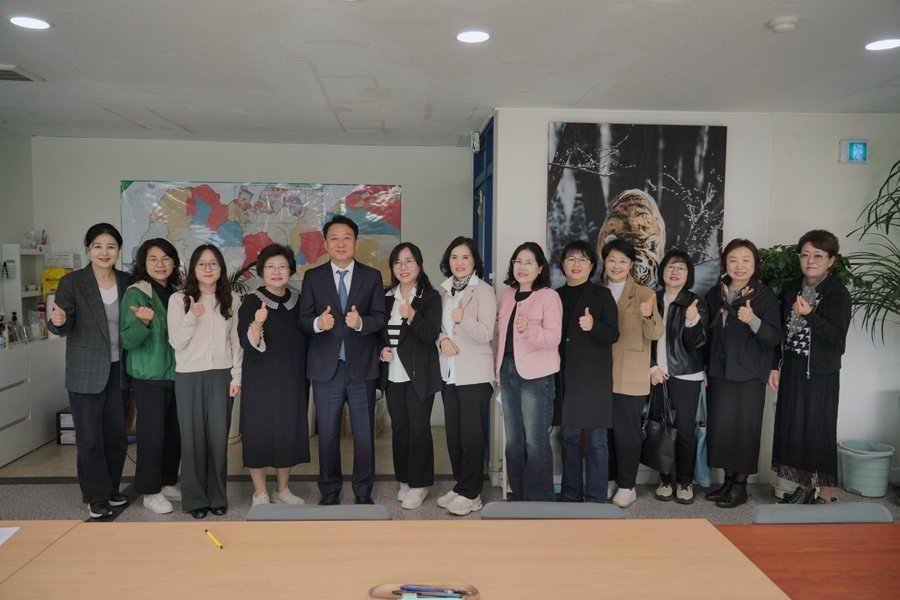
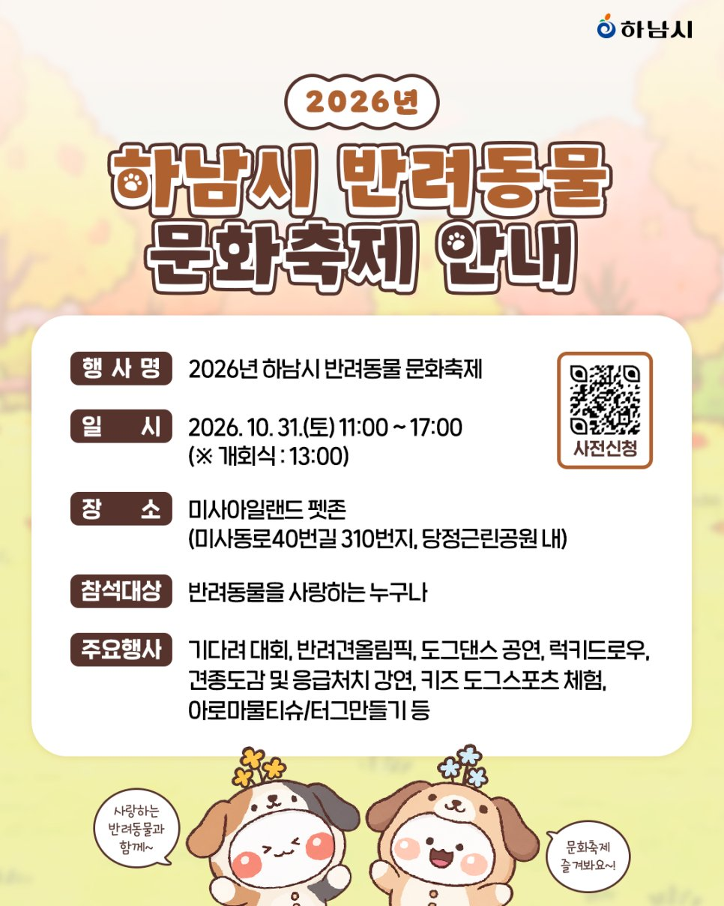
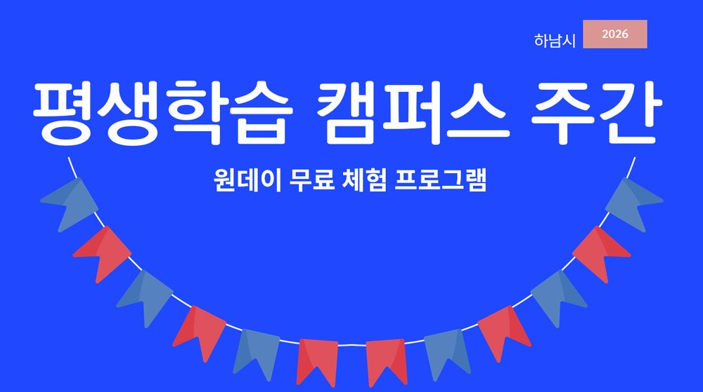
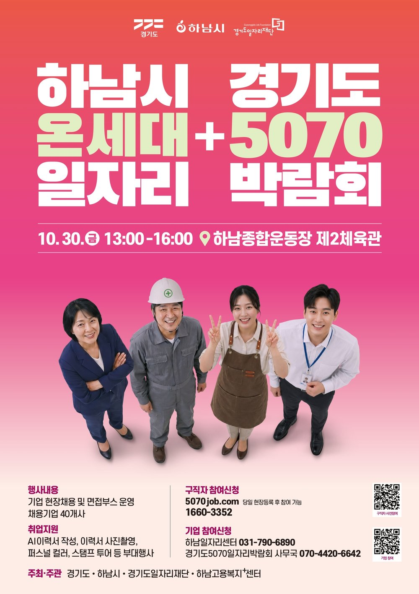
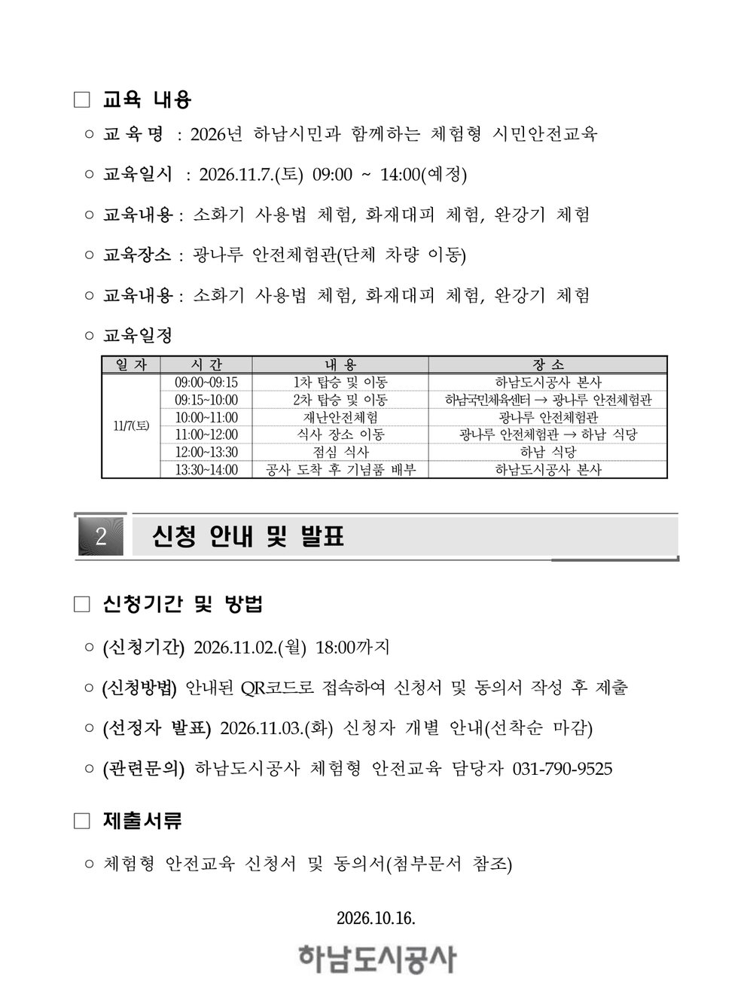

63호 | 2026년 10월 22일 발행
📌 이번 호 주요 목차
 우리동네 국회의원 이광재
우리동네 국회의원 이광재
📝 현장일지
이광재의원, 하남 지역아동센터 "흔들리지 않도록 함께 답을 찾겠습니다"
• 하남 지역아동센터 센터장들과 아침 간담회, 현장 어려움 청취
• 매달 11일 월세를 말일에야 겨우 납부, 모자란 돈은 센터장들이 사비로 메워
• 김장김치 넣어둘 김치냉장고 없고, 낡은 냉장고 고장 날까 노심초사
• 하남시와 조례로 근거 만들어 해마다 예측 가능한 지원 방안 추진
• "아이들이 자라는 집이 흔들리면 안 된다"는 말씀 무겁게 새겨
• 매달 11일 월세를 말일에야 겨우 납부, 모자란 돈은 센터장들이 사비로 메워
• 김장김치 넣어둘 김치냉장고 없고, 낡은 냉장고 고장 날까 노심초사
• 하남시와 조례로 근거 만들어 해마다 예측 가능한 지원 방안 추진
• "아이들이 자라는 집이 흔들리면 안 된다"는 말씀 무겁게 새겨

📌 출처: 이광재 공식 네이버 블로그
📰 언론보도
[뉴스투데이24] 이광재의원 "제5차 국가철도망 계획 11월 발표… 철도 예산 100조 넘어야"
이광재 의원이 21일 기자간담회에서 제5차 국가철도망 구축계획이 11월을 넘기지 않고 발표될 것이라고 밝혔습니다. 하남시는 GTX-D 황산 경유와 위례신사선 감일 연장(5km·정거장 3곳)의 계획 반영에 총력을 기울이고 있습니다. 이 의원은 전국 지자체 요구 사업이 600조 원 규모로 경쟁이 치열하다며 "철도 예산이 100조 원을 넘어야 출퇴근 30분대 시대가 열린다"고 강조했습니다. 지하철 9호선 하남 연장은 추미애 경기도지사에게 조속한 추진을 요청했다고 전했습니다.
📌 출처: 뉴스투데이24 (윤제양 기자)
📰 하남 지역 주요 뉴스
🏛️ 경기도의회
[인터뷰] 강성삼 경기도의원 취임 100일 "교산 대토보상 앞당기고, 말 아닌 결과로 평가받겠다"
강성삼 경기도의원(더불어민주당·하남2)이 취임 100일을 맞아 성과와 계획을 밝혔습니다. 강 의원은 6년 가까이 지연된 교산신도시 대토보상용지 공급을 놓고 LH·GH, 주민 대표와 간담회를 열어 공급 시기를 2027년 1분기까지 앞당기는 방안을 검토하겠다는 답을 받았습니다. 인구 33만 명 시대에 맞춰 하남소방서의 교산지구 이전도 요구하고 있으며, 학교시설 주민 이용·방연마스크 조례 개정안은 12월 회기에 심사됩니다. 남은 임기에는 황산~초이 도로 완공과 원도심 공영주차장 확충에 힘쓰겠다고 했습니다.
📌 출처: 더퍼블릭 (최인철 기자)
🔍 시의회/행정감사
최승태 하남시의원, 역사박물관장 채용 공정성 추궁… "수의계약 업체 대표가 심사위원?"
최승태 하남시의원(더불어민주당, 가선거구)이 20일 하남문화재단 행정사무감사에서 하남역사박물관장 채용의 공정성을 추궁했습니다. 최 의원은 지난 4월 하남뮤직페스티벌 관련 5,000만 원 수의계약을 맺은 업체 대표가 3개월 뒤 관장 채용 서류심사위원으로 참여한 정황을 제기했습니다. 재단은 심사위원 선정 기준이 규정으로 마련돼 있지 않고 법률 검토도 하지 않았다는 취지로 답했습니다. 최 의원은 이해충돌 검증 여부를 철저히 조사하고 출자·출연기관 인사행정 개선책을 마련하라고 촉구했습니다.
📌 출처: 이뉴스투데이 (김승희 기자)
🌿 환경/생활
감일신도시 능안천·벌말천 용수 공급 청신호… 하루 1만㎥ 추진
하남시가 감일신도시 능안천과 벌말천의 유지용수 확보를 위해 한국수자원공사와 협의한 끝에 조건부 공급이 가능하다는 의견을 받았다고 21일 밝혔습니다. 시는 두 하천에 하루 5,000㎥씩 총 1만㎥ 공급을 목표로 지난해 6월부터 협의해 왔습니다. 신규 댐용수 배정이 어렵다는 수자원공사에 기존 계약량 조정과 지하철 공사 지하수·하수처리수 활용 방안을 제시해 지난달 14일 긍정적 답을 얻었습니다. LH는 지난 7일 공급시설 공사를 마치고 관계기관 합동점검을 요청했습니다.
📌 출처: 경기신문 (김홍엽 기자)
💬 하남 맘카페 HOT 이슈
이번 주 하남 지역 맘카페(감일스윗시티, 교산우리동네, 미사맘스클럽, 아이품애 등)에서 많이 오르내린 HOT 이슈 TOP 3입니다.
1️⃣ [교통] "7시 반이면 벌써 만차"… 환승주차장·출근길 정체에 '오금역 마을버스' 요청까지, 출퇴근 고민 글 이어져
현황: 출퇴근길 교통 불편을 털어놓는 글이 이어졌습니다. 교산우리동네에는 '비 오는 월요일, 하남시청역 환승주차장이 아침 7시 반에 벌써 만차였다'는 글이 올라왔습니다. 평소엔 8시 전에만 가면 자리가 있었는데, 길 건너 공영주차장도 겨우 한 자리 남아 역까지 우산 쓰고 7분을 걸었다며 '내일부터는 마을버스를 타겠다'고 했습니다. 같은 카페에는 '아침 7시 반만 넘으면 큰길이 꽉 막혀 감일 쪽으로 돌아가 봤더니 10분 정도 빨랐지만, 퇴근길 6시엔 똑같이 막힌다'며 송파 방면 출근길 다른 경로를 묻는 글도 있었습니다. 감일스윗시티에는 '마을버스 08번처럼 오금역까지 가는 마을버스가 있으면 좋겠다'는 감일 주민의 요청 글이 올라왔습니다.
💡 주민 포인트: 비 오는 날은 환승주차장이 평소보다 일찍 차니 10분 일찍 나서거나 마을버스를 이용하는 것이 좋다는 경험담이 많았습니다. 버스 노선 신설·조정 건의는 국민신문고(epeople.go.kr)를 통해 하남시에 낼 수 있습니다.
💬 주민 반응: 출근 시간대 정체와 주차난에 공감하는 글이 이어졌고, 장바구니 카트를 든 어르신이 자리에 앉을 때까지 기다려 준 마을버스 기사님 이야기에는 '아침부터 마음이 따뜻해졌다'는 반응이 이어졌습니다.
📌 출처: 네이버 카페 (교산우리동네, 좋은예감 일등도시 감일스윗시티)
2️⃣ [교육] "하남교육지원청, 내년 9월 문 연다"… 개청 6개월 앞당겨지자 학부모 카페 '환영'
현황: 안민석 경기도교육감이 15일 하남종합복지타운에서 열린 학부모 타운홀 미팅에서 하남교육지원청 신설을 공개 약속했다는 소식이 하남 카페마다 공유됐습니다. 당초 2028년 3월이던 정식 개청 시기를 2027년 9월로 6개월 앞당기도록 지시했고, 경기도 6개 통합교육지원청 분리 대상 가운데 하남을 '1호'로 지정했다는 내용입니다. 감일스윗시티에는 '교육지원청 분리 신설, 하남이 첫 번째'라는 기사 공유 글과 함께, 이광재 의원 기자간담회 영상 내용을 옮긴 글이 올라와 '하남교육지원청은 내년 9월에 문을 열게 된다'는 발언이 소개됐습니다. 교산 부동산 카페들도 개청 소식을 앞다퉈 실었고, 교산라이프에는 2027학년도 하남시 초등학교 통학구역 설정안에 대해 광주하남교육지원청이 10월 15일부터 11월 4일까지 주민 의견을 받는다는 글도 올라왔습니다.
💡 주민 포인트: 지금은 하남 학교 업무를 광주하남교육지원청이 함께 맡고 있습니다. 통학구역 설정안은 아직 확정 전이니, 우리 아파트 배정 학교가 궁금하면 광주하남교육지원청 공지사항에서 설정안과 의견서 제출 방법을 확인하세요.
💬 주민 반응: '33만 하남시민의 숙원'이 풀리게 됐다며 반기는 공유 글이 이어졌고, 다른 지역 카페에서도 하남 사례를 부러워하며 자기 지역 분리를 기대하는 글이 올라왔습니다.
📌 출처: 네이버 카페 (좋은예감 일등도시 감일스윗시티, 교산신도시 부동산정보, 교산라이프)
3️⃣ [나들이] "핑크뮬리, 이번 주가 막차"… 하나반 콘서트 후기·축제 연기 소식에 가을 나들이 정보 활발
현황: 가을 나들이 정보가 맘카페를 채웠습니다. 17~18일 나무고아원과 미사한강공원 4호 일원에서 열린 '2026 하나반 치유 페스티벌'은 민경훈·어반자카파·나린이 출연한 '하나반 괜찮아 콘서트'로 관심을 모았습니다. 미사맘스클럽에는 '북측 공원은 사람도 적고 분위기 좋다, 의자가 없으니 돗자리를 챙기라'는 실시간 후기와 '음향이 웅웅거려 가사가 안 들렸다'는 아쉬움, 콘서트장에서 잃어버린 차 키를 찾는 글이 올라왔고, 아이품애에는 나무고아원 숲 요가 참여 후기가 공유됐습니다. 18일 행사는 강풍과 비로 연기됐습니다. 미사경정공원(조정경기장) 핑크뮬리도 화제였습니다. 정문 왼쪽 P8 주차장 옆에 활짝 피었다는 위례 카페 후기, 핑크뮬리·코스모스·국화가 함께 피었다는 미사맘 후기에 이어 '주말 비가 온 뒤에도 남아 있느냐'는 질문이 나왔습니다.
💡 주민 포인트: 연기된 하나반 페스티벌 일정은 하남문화재단 홈페이지와 SNS로 안내되며, 문의는 하남문화재단(031-790-7926)으로 하면 됩니다. 미사경정공원 핑크뮬리는 정문 왼쪽 P8 주차장 인근에 있습니다.
💬 주민 반응: 집 가까이에서 공연과 꽃구경을 즐길 수 있어 좋았다는 반응이 많았고, 다음 공연은 음향을 보완해 달라는 바람과 날이 더 추워지기 전에 핑크뮬리를 서둘러 보라는 조언이 이어졌습니다.
📌 출처: 네이버 카페 (미사강변도시 미사맘스클럽, 아이품애, 슬기로운 위례생활, 리버스위트칸타빌마을, 교산살래)
🎭 ALL IN 하남라이프
2026년 10월 22일 기준 한눈에 보는 하남시 최신 문화·행사·교육 안내 가이드
🐶 10.31(토) 11:00~17:00 | 미사아일랜드 펫존 · 사전신청 ~10.28
[축제] 2026 하남시 반려동물 문화축제 — 기다려 대회·반려견올림픽·도그댄스 공연 (하남시)
"우리 댕댕이와 함께 뛰노는 가을 축제"
반려동물과 함께 웃고 뛰놀며 추억을 만드는 하남시 반려동물 문화축제가 열립니다. 대회와 공연, 체험·강연 프로그램이 하루 종일 이어집니다.
🗓 일시: 2026.10.31(토) 11:00~17:00 (개회식 13:00)
📍 장소: 미사아일랜드 펫존 (미사동로40번길 310, 당정근린공원 내)
👥 대상: 반려동물을 사랑하는 누구나
🎉 프로그램: 기다려 대회, 반려견올림픽, 도그댄스 공연, 럭키드로우, 견종도감·응급처치 강연, 키즈 도그스포츠 체험, 아로마물티슈·터그 만들기
✅ 사전신청: 10.28(수)까지 (포스터 QR코드, 선착순 조기 마감 가능)
반려동물과 함께 웃고 뛰놀며 추억을 만드는 하남시 반려동물 문화축제가 열립니다. 대회와 공연, 체험·강연 프로그램이 하루 종일 이어집니다.
🗓 일시: 2026.10.31(토) 11:00~17:00 (개회식 13:00)
📍 장소: 미사아일랜드 펫존 (미사동로40번길 310, 당정근린공원 내)
👥 대상: 반려동물을 사랑하는 누구나
🎉 프로그램: 기다려 대회, 반려견올림픽, 도그댄스 공연, 럭키드로우, 견종도감·응급처치 강연, 키즈 도그스포츠 체험, 아로마물티슈·터그 만들기
✅ 사전신청: 10.28(수)까지 (포스터 QR코드, 선착순 조기 마감 가능)

📌 출처: 하남시 공식 블로그 (하남스토리)
🎓 11.6(금)~11.12(목) | 원데이 23개 강좌 · 무료 · 10.23(금) 09:00 접수
[교육] 평생학습 캠퍼스 주간 원데이 체험 프로그램 — 동네 곳곳 23개 무료 강좌 (하남시 평생교육과)
"여기가 평생학습 캠퍼스라고?"
신장·덕풍·미사·감일 등 동네 곳곳의 평생학습 공간에서 부담 없이 참여하는 원데이 체험 강좌 23개가 열립니다. 수강료·재료비 모두 무료입니다.
🗓 기간: 2026.11.6(금)~11.12(목), 강좌별 2시간 내외
☕ 신장동: 커피 드립·드립백, 단호박 머핀, 감성일러스트 굿즈, 사물놀이 체험
🧗 미사동: 클라이밍 체험, 근막이완 테라피, 사과 갈레트, 타일아트 냄비받침, 엄마 손끝 과학
💐 감일동: 미니 꽃다발, 지우개도장 책갈피, 흙으로 만드는 계란트레이, 영양간식
👥 대상: 하남시 거주자 (관내 재직자 가능) · 1인 1강좌
✅ 신청: 10.23(금) 09:00부터 하남시 평생학습포털 온라인 선착순
☎️ 문의: 031-790-6622 (하남시 평생교육과)
신장·덕풍·미사·감일 등 동네 곳곳의 평생학습 공간에서 부담 없이 참여하는 원데이 체험 강좌 23개가 열립니다. 수강료·재료비 모두 무료입니다.
🗓 기간: 2026.11.6(금)~11.12(목), 강좌별 2시간 내외
☕ 신장동: 커피 드립·드립백, 단호박 머핀, 감성일러스트 굿즈, 사물놀이 체험
🧗 미사동: 클라이밍 체험, 근막이완 테라피, 사과 갈레트, 타일아트 냄비받침, 엄마 손끝 과학
💐 감일동: 미니 꽃다발, 지우개도장 책갈피, 흙으로 만드는 계란트레이, 영양간식
👥 대상: 하남시 거주자 (관내 재직자 가능) · 1인 1강좌
✅ 신청: 10.23(금) 09:00부터 하남시 평생학습포털 온라인 선착순
☎️ 문의: 031-790-6622 (하남시 평생교육과)

📌 출처: 하남시평생학습관 (하남시 평생교육과)
🌸 가을꽃 나들이 | 미사경정공원 핑크뮬리 · 무료
[나들이] 경기관광공사 추천 가을꽃 명소 6곳… 우리 동네 미사경정공원 핑크뮬리도 선정 (한국경제)
"멀리 가지 않아도 분홍빛 가을"
경기관광공사가 멀리 떠나지 않고도 가을 정취를 즐길 수 있는 경기도 대표 꽃 여행지 6곳을 소개했습니다. 하남 미사경정공원은 경정 경기장 주변을 분홍빛으로 물들이는 핑크뮬리 명소로 꼽혔습니다.
🌾 하남 미사경정공원: 핑크뮬리 단지가 정문 가까이 있어 찾기 쉽고, 넓은 잔디광장·산책로는 경기 없는 날에도 시민 휴식 공간 (하남시 미사동 15 · 무료 · 5호선 미사역)
🌼 함께 소개된 곳: 양주 나리농원(천일홍), 연천 임진강댑싸리정원(~10.31), 구리 한강시민공원(코스모스), 안성 금광호수 수석정 수변화원, 여주 당남리섬
경기관광공사가 멀리 떠나지 않고도 가을 정취를 즐길 수 있는 경기도 대표 꽃 여행지 6곳을 소개했습니다. 하남 미사경정공원은 경정 경기장 주변을 분홍빛으로 물들이는 핑크뮬리 명소로 꼽혔습니다.
🌾 하남 미사경정공원: 핑크뮬리 단지가 정문 가까이 있어 찾기 쉽고, 넓은 잔디광장·산책로는 경기 없는 날에도 시민 휴식 공간 (하남시 미사동 15 · 무료 · 5호선 미사역)
🌼 함께 소개된 곳: 양주 나리농원(천일홍), 연천 임진강댑싸리정원(~10.31), 구리 한강시민공원(코스모스), 안성 금광호수 수석정 수변화원, 여주 당남리섬
📌 출처: 한국경제 (정진욱 기자) · 사진: 연천 댑싸리정원 (연천군 제공)
🏛️ 공공기관 소식지
2026년 10월 22일 기준 하남시 공공기관 주요 공고·신청 안내입니다.
💼 하남시 | 10.30(금) 13~16시 · 구직자 누구나
청년부터 어르신까지 한자리에… 하남시 ‘온세대 + 경기도 5070 일자리박람회’ 개최
"이력서 한 장 들고 오세요, 40개 기업이 현장에서 면접 봅니다"
청년·중장년·어르신·장애인·경력보유여성 채용행사를 한자리에 모은 통합 일자리박람회입니다. 보바스병원, 일양약품, 쿠팡풀필먼트서비스, 하남우체국 등이 참여하고 AI 이력서 작성·이력서 사진 촬영·면접 메이크업 등 부대행사도 열립니다.
📝 일시: 2026. 10. 30.(금) 13:00~16:00 / 하남종합운동장 제2체육관
👥 대상: 취업을 희망하는 구직자 누구나 (직접채용 40개사)
✅ 신청: 행사 전일까지 5070job.com/Hanam 사전 신청 또는 당일 현장 등록 (현장면접 희망 시 이력서·구비서류 지참)
☎️ 문의: 031-790-6890 (하남일자리센터) / 1660-3352 (경기도 5070 일자리박람회 운영본부)
청년·중장년·어르신·장애인·경력보유여성 채용행사를 한자리에 모은 통합 일자리박람회입니다. 보바스병원, 일양약품, 쿠팡풀필먼트서비스, 하남우체국 등이 참여하고 AI 이력서 작성·이력서 사진 촬영·면접 메이크업 등 부대행사도 열립니다.
📝 일시: 2026. 10. 30.(금) 13:00~16:00 / 하남종합운동장 제2체육관
👥 대상: 취업을 희망하는 구직자 누구나 (직접채용 40개사)
✅ 신청: 행사 전일까지 5070job.com/Hanam 사전 신청 또는 당일 현장 등록 (현장면접 희망 시 이력서·구비서류 지참)
☎️ 문의: 031-790-6890 (하남일자리센터) / 1660-3352 (경기도 5070 일자리박람회 운영본부)

📌 출처: 하남시 (지역경제과)
🧯 하남도시공사 | 11.2(월) 18시 마감 · 선착순 20명
2026년 하남도시공사 체험형 시민안전교육 참가자 모집
"소화기·완강기, 직접 잡아봐야 실제 상황에서 손이 갑니다"
하남도시공사가 시민 20명과 함께 광나루 안전체험관에서 화재 대응 체험교육을 진행합니다. 단체 차량으로 이동하고 점심 식사와 참가자 기념품도 제공됩니다.
📝 일시: 2026. 11. 7.(토) 09:00~14:00(예정) / 광나루 안전체험관 (하남도시공사 본사·하남국민체육센터에서 단체 차량 탑승)
📚 내용: 소화기 사용법 체험, 화재대피 체험, 완강기 체험
👥 대상: 신청일 기준 하남시 거주자 20명 이내 (만 7세 이상, 만 12세 미만은 보호자 동반 필수)
✅ 신청: 11. 2.(월) 18:00까지 공고문 QR코드로 접속해 신청서·동의서 제출 (선착순, 11. 3. 개별 안내)
☎️ 문의: 031-790-9525 (하남도시공사 체험형 안전교육 담당)
하남도시공사가 시민 20명과 함께 광나루 안전체험관에서 화재 대응 체험교육을 진행합니다. 단체 차량으로 이동하고 점심 식사와 참가자 기념품도 제공됩니다.
📝 일시: 2026. 11. 7.(토) 09:00~14:00(예정) / 광나루 안전체험관 (하남도시공사 본사·하남국민체육센터에서 단체 차량 탑승)
📚 내용: 소화기 사용법 체험, 화재대피 체험, 완강기 체험
👥 대상: 신청일 기준 하남시 거주자 20명 이내 (만 7세 이상, 만 12세 미만은 보호자 동반 필수)
✅ 신청: 11. 2.(월) 18:00까지 공고문 QR코드로 접속해 신청서·동의서 제출 (선착순, 11. 3. 개별 안내)
☎️ 문의: 031-790-9525 (하남도시공사 체험형 안전교육 담당)

📌 출처: 하남도시공사 (공고 제2026-136호)
🧘 하남시보건소 | 10.29(목) 18시 접수 마감 · 60세 이상 20명
시니어 헬스센터 「바른자세 스트레칭 운동교실 5기」 참가자 모집
"굽은 등·뻣뻣한 허리, 일주일 두 번으로 풀어보세요"
하남시보건소 시니어 헬스센터가 어르신 대상 스트레칭 운동교실 5기를 모집합니다. 소도구를 활용해 유연성을 높이고 코어 근육 강화와 전신 혈액순환을 돕는 프로그램입니다.
📝 접수: 2026. 10. 19.(월) 09:00 ~ 10. 29.(목) 18:00 (점심시간 12~13시 제외)
📅 수업: 11. 4.(수) ~ 12. 11.(금) 매주 수·금 14:30~15:30, 총 12회 / 시니어 헬스센터(역말로 71, 덕풍스포츠문화센터 2층 교육실)
👥 대상: 60세 이상 하남시민 20명
✅ 신청: 시니어 헬스센터 방문 또는 전화 접수 후 추첨 (마감 다음 날 추첨·문자 발송, 방문 시 신분증 지참)
☎️ 문의: 031-5182-1640 (하남시보건소 시니어 헬스센터)
하남시보건소 시니어 헬스센터가 어르신 대상 스트레칭 운동교실 5기를 모집합니다. 소도구를 활용해 유연성을 높이고 코어 근육 강화와 전신 혈액순환을 돕는 프로그램입니다.
📝 접수: 2026. 10. 19.(월) 09:00 ~ 10. 29.(목) 18:00 (점심시간 12~13시 제외)
📅 수업: 11. 4.(수) ~ 12. 11.(금) 매주 수·금 14:30~15:30, 총 12회 / 시니어 헬스센터(역말로 71, 덕풍스포츠문화센터 2층 교육실)
👥 대상: 60세 이상 하남시민 20명
✅ 신청: 시니어 헬스센터 방문 또는 전화 접수 후 추첨 (마감 다음 날 추첨·문자 발송, 방문 시 신분증 지참)
☎️ 문의: 031-5182-1640 (하남시보건소 시니어 헬스센터)

📌 출처: 하남시보건소 (건강증진과 시니어 헬스센터)
© 2026 우리동네 진짜일꾼 이광재